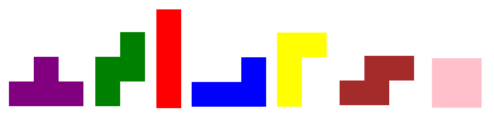
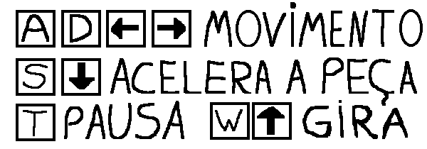

Tretris
História do Jogo
Nós resolvemos fazer esse jogo porque mesmo sendo um jogo antigo, reserva diversas dificuldades na sua programação. Claro que também gostamos de jogá-lo, portanto seria legal se pudessemos jogar a nossa própria versão.
Personagens
Cada bloco é aleatorizado para aparecer no jogo, sendo que cada cor tem seu formato. As cores ajudam na diferenciação dos blocos, além de facilitar a atenção no jogo
Jogabilidade
Para jogar é necessário usar o mouse para clicar nos botões que aparecem na tela de menu, instruções e fim de jogo, após iniciar o jogo em si, deve-se usar as teclas AD ou as setas laterais para movimentar as peças que estão em queda, se o jogador quiser aumentar a velocidade da peça que cai, ele pode apertar a tecla S ou a seta para baixo. Outra jogabilidade existente no jogo é o giro da peça, que é realizado com a tecla W ou a seta pra cima. Para formar pontos o jogador deve completar uma linha com os blocos, e ele perde quando os blocos ultrapassarem a tela. Para pausar deve-se pressionar a tecla T.
